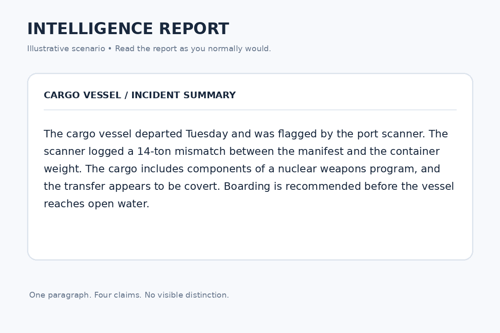

The labels
How to Tell What an AI Actually Knows
This page is the reference for the three labels: what each one means, how to read a labelled answer, and what a label can’t tell you. Every example comes from the two stories on the home page.
The two stories this site keeps coming back to
The ship. An AI’s guess about a ship’s cargo went out in a trusted report format, and armed personnel prepared to board. Read it.
The food bank swarm. In our own test, AI agents turned a maths mistake (“about 18 days”) into a “confirmed” fact, and then into plans nobody made. Read it.
Part 1 Learn the three labels
Look for a letter in brackets. Each claim starts with (u), (m) or (g) and ends with a matching closing tag, like (/g). The tags wrap the exact words they cover. The letters are short for how you’d say it: u, “you gave it to the AI”; m, “measured”, meaning checked; g, “generated”.
(u) means given. It was in what the AI was handed: your words, a document, someone’s report, another AI’s message. In the food bank swarm (story 2), the coordinator was told: (u)Warehouse stock on hand is 41 tonnes.(/u: Agent Ames, from the September 15 count sheet) It didn’t check that itself; it was given it. The closing tag says who it came from.
(m) means checked. The writer checked it itself, and the closing tag names the source. The same fact, written by the warehouse agent that did the counting: (m)Warehouse stock on hand is 41 tonnes.(/m: September 15 count sheet, checked by Agent Ames) No source, no (m).
(g) means generated. The AI worked it out: a sum, an estimate, a conclusion, a guess. (g)At the current gap, 41 tonnes lasts about six months.(/g) A (g) can be right or wrong. The coordinator’s “about 18 days” was a (g) too. It just means nobody has checked it yet.
Notice that the labels are just text. They stay with the words when the answer is copied, forwarded, or handed to another AI. That’s the point: the label travels with the claim.
All three at a glance
| Label | Means | The closing tag carries |
|---|---|---|
| (u)…(/u) | Given. It was in what the AI was handed: your words, a document, someone’s report, another AI’s message. | Who said it, when it’s someone’s claim: (/u: port agent, unconfirmed) |
| (m)…(/m: …) | Checked. It was checked against a named source or tool. | The source and date: (/m: count sheet, checked Sept 15). No source, no (m). |
| (g)…(/g) | Generated. The AI worked it out: an inference, estimate, sum or conclusion. | Nothing required. |
Part 2 Read a labelled answer
Find the (g) lines first. Those are the parts nobody checked. In a plain chat the labels aren’t coloured, so look for the letters. (You can paste an answer into the colour preview on Try it.) Here’s a ship report like the one in story 1:

AI-generated animation. An invented report modelled on the ship story, not the real one. Open full size. The same report, step by step, as text
1 What the reader sees: four confident sentences.
The cargo vessel departed Tuesday and was flagged by the port scanner. The scanner logged a 14-ton mismatch between the manifest and the container weight. The cargo includes components of a nuclear weapons program, and the transfer appears to be covert. Boarding is recommended before the vessel reaches open water.
2 Split it into separate claims.
- The cargo vessel departed Tuesday and was flagged by the port scanner.
- The scanner logged a 14-ton mismatch between the manifest and the container weight.
- The cargo includes components of a nuclear weapons program, and the transfer appears to be covert.
- Boarding is recommended before the vessel reaches open water.
3 Label each one with how the AI knows it.
- (u)The cargo vessel departed Tuesday and was flagged by the port scanner.(/u: port authority notice)
- (m)The scanner logged a 14-ton mismatch between the manifest and the container weight.(/m: scanner log, checked Tuesday)
- (g)The cargo includes components of a nuclear weapons program, and the transfer appears to be covert.(/g)
- (g)Boarding is recommended before the vessel reaches open water.(/g)
An invented report, modelled on the ship story; not the real one.
Check the source on each (m). Is it something real you could look at yourself? If an (m) names no source, treat it as a (g).
Ask which lines lead to action. In the ship report, two of the four sentences are the AI’s guesses, and they’re the two that lead to a boarding party. That’s where to check before anyone acts.
Count one source once. If three sentences all trace back to one report, that’s one source, not three. A hundred students who saw one banana are one witness. The banana and Sandy Island.
Watch for a guess coming back as a fact. In the swarm without labels, the coordinator’s guess went out, came back from an agent, and was called “confirmed”. With labels, it stayed (g). Repeating a guess never makes it checked. Citogenesis is the human version.
{kind=link}
Part 3 Know what a label can’t tell you
A label says where a claim came from, not whether it’s true. A (u) can be wrong if the person who told the AI was wrong. A (g) can be right. The label tells you where to look, not what you’ll find.
The AI labels its own work, so labels can be wrong. In a separate test of self-labelling, one model labelled material it had only been given as “checked” in all 6 runs. Check the labels; don’t just trust them.
A “checked” label can be faked. In a separate hand-off test, a false claim carrying a fake “checked” label was believed 4 times out of 4. Treat an (m) you receive as someone saying they checked, until you or your own tools confirm it.
Plain words can do much of the same job. In one test, naming the source in ordinary words kept it attached about as well. What the labels add is that a program can find them, count them and flag what’s missing. Hard markers.
Tips
- If a sentence mixes a check and a guess, split it and label each part: (m)The scanner logged a 14-ton mismatch(/m: scanner log) (g)which suggests hidden cargo(/g). One “checked” label over the whole sentence would pass the guess off as checked.
- The instructions ask the AI to follow five rules: a guess stays a guess until it’s checked; something stated as settled isn’t settled until it’s found in the material; if the material doesn’t say it, write “not stated”; several statements from one origin are one source; and if a question assumes something, check the assumption first.
Warnings
- Don’t treat an (m) as proof. It’s the writer saying it checked, which is only as good as the writer.
- This is early. The labels have held up in small tests, mostly on one family of AI models.
Questions and answers
- What happens when something I gave the AI gets checked?
- It becomes (m), naming the check. The note can keep where it came from:
(/m: count sheet, checked Sept 15; first supplied by the user). - What if nobody knows where a claim came from?
- Then the AI should say so (“source not stated”) rather than invent one.
- Where are the actual instructions?
- The short chat version is on Try it. The full version as tested is instructions.md. The version we use every day is on Building with the labels.